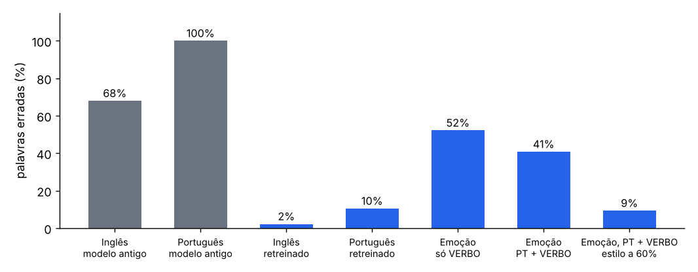
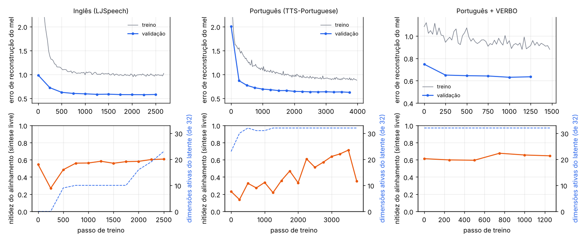
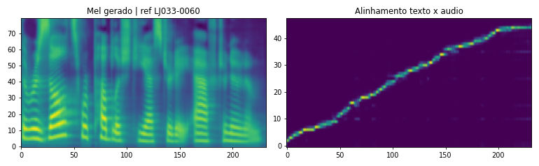
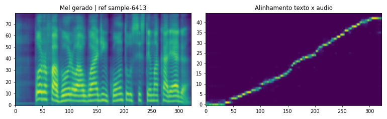
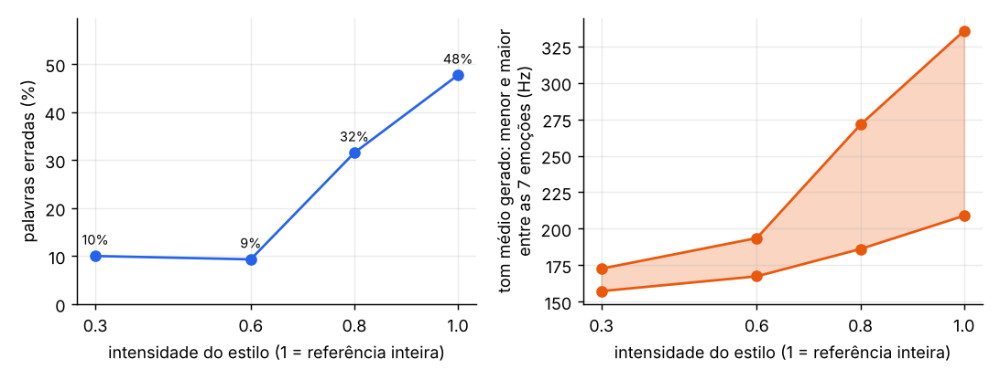
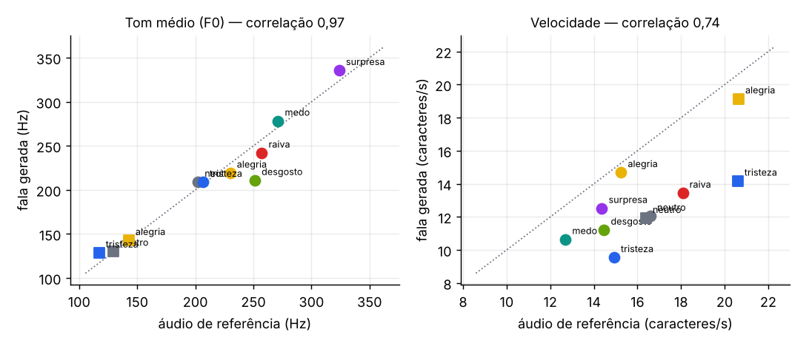
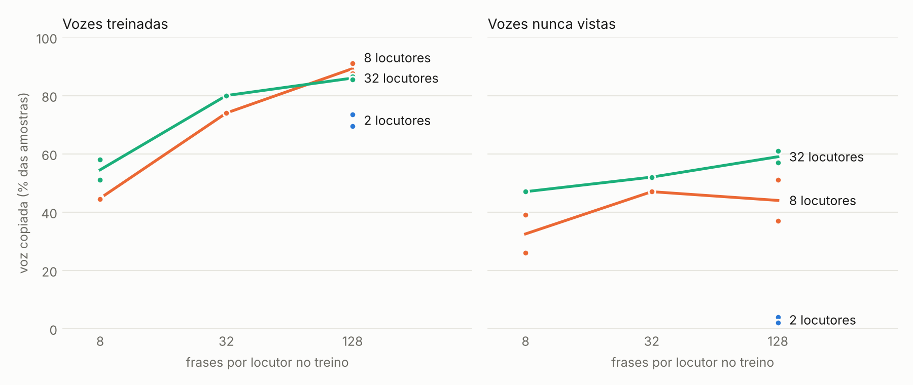

1 · Revision What was wrong and what changed
The "interpretable spectral attention" of the previous version of this page was not a valid result.
The reference audio encoder reshaped the spectrogram with .view() without swapping the axes.
Time and frequency were mixed, and the position of the blocks changed with the batch padding.
The "spectral bands" that the attention seemed to choose were an effect of this bug. The comparison with the
baseline was not valid either: the two models had been trained for very different lengths of time
(11.2 thousand and 35.5 thousand iterations).
We checked the audio from the previous version with speech recognition (Whisper). The result explains why it sounded bad:

| Problem found | Effect | Fix |
|---|---|---|
| Mel axes swapped | Time and frequency mixed in the style encoder; the origin of the "spectral attention" | Transpose before the convolutions; the GRU runs over time blocks of ~0.74 s |
| Padding in the summary | The style vector of an utterance changed with the batch size | The attention gives zero weight to the padding blocks |
| Extra LayerNorm | The pretrained Tacotron 2 weights did not work | Removed |
| Training from scratch | Poor text–audio alignment; unintelligible Portuguese | Training from the pretrained Tacotron 2, in stages |
| English-only vocoder | Artifacts on other voices | Pretrained universal HiFi-GAN |
2 · The model Tacotron 2 with a style vector
Text path
Encoder: turns characters (English) or phonemes (Portuguese) into a sequence of vectors.
Attention: at each instant, chooses which part of the text the model is at.
Decoder: generates the mel spectrogram frame by frame and decides when to stop.
Vocoder (HiFi-GAN): turns the spectrogram into sound.
Style path
Reference encoder: 6 convolutions and a GRU read the spectrogram of the reference audio in time blocks.
Attention summary: a weighted average of the blocks, ignoring the padding.
VAE: the summary becomes a 32-dimensional distribution (μ, σ), from which the vector z is sampled.
Injection: z becomes a style vector added to every position of the text encoder output.
The KL term uses free bits (0.5 nat per dimension) and a cyclical weight β, so that the model does not ignore z. Guided attention penalizes alignments far from the diagonal and speeds up the start of training.
About the attention summary. It was kept, now over real time blocks. We did not redo the comparison with the usual alternative (last GRU state), so we do not claim that it is better.
3 · Training Three stages, each starting from the previous one
| Stage | Starting point | Data | Steps |
|---|---|---|---|
| English | Pretrained Tacotron 2 (NVIDIA) | LJSpeech: 13,100 utterances, 23.7 h, one female speaker | 2,500 |
| Portuguese | English model | TTS-Portuguese Corpus: 2,245 utterances, 3.8 h, one male speaker | 4,000 |
| Emotion | Portuguese model | TTS-Portuguese + VERBO (1,167 utterances, 12 speakers, 7 emotions) | 1,500 |
Everything was trained on one L4 GPU on Google Cloud, on spot machines (interrupted several times; training resumes from the last saved checkpoint). Learning rate 10−4, with a 500-step warmup.

4 · English 2.2% wrong words
Of 18 audio clips (6 sentences × 3 references), 15 were transcribed without any error and all of them finished on their own. The 3 errors were on the same word: “stone” heard as “storm” or “strong”.

The style barely changes in English. The pitch and speed of the generated audio did not follow the three references tested. LJSpeech is a single female speaker reading in a uniform way: there is little style variation to learn.
5 · Portuguese 10.5% wrong words, with the speed of the reference
The English model was fine-tuned on 3.8 h of Portuguese speech. Of 18 audio clips, all finished on their own. The remaining errors are isolated substitutions (“carrega” → “cariga”, “olhou” → “orou”); two of the failures counted are just the transcription writing “8” instead of “oito”.
The same sentence with three references
“O filme começa às oito horas da noite.” (“The film starts at eight in the evening.”) The reference changes only the speaking speed.
Other sentences

6 · Emotion Voice and pitch copied from the VERBO references
VERBO has 12 speakers speaking in 7 emotions, but only 14 different sentences. This creates a conflict: the corpus teaches a lot about how to speak and almost nothing about what to say. We tested three recipes, always with the same 6 new sentences and 10 references (7 emotions from female speaker f1, 3 from male speaker m1).
| Recipe | Wrong words | Does the pitch follow the reference? |
|---|---|---|
| Portuguese model, without VERBO | 19% (4 references) | No: the voice is always that of the Portuguese corpus |
| Fine-tuning on VERBO only | 52% | Yes (correlation 0.96) |
| Portuguese + VERBO together | 41% | Yes (correlation 0.97) |
| Portuguese + VERBO, style at 60% | 9% (7 references) | Partly: the speed changes with the emotion, the pitch stays close to neutral |
With the full style of the reference, the model copies the voice and the pitch (it even switches from a female to a male voice), but loses intelligibility: it starts speaking in a voice it only knows from 14 sentences. The way out we found is a strength control: multiplying the reference style code by a factor between 0 and 1 before synthesizing. At 60%, almost all words are understood again.


References (real VERBO audio)
All of them say “Agora vou pôr a camiseta e sair para uma caminhada.” (“Now I am going to put on my T-shirt and go for a walk.”)
New sentence with the full style (100%)
“Eu nunca pensei que veria você aqui de novo.” (“I never thought I would see you here again.”) The voice and pitch follow the reference, but several come out truncated or wrong (surprise and fear are the worst).
The same sentence with the style at 60%
All of them are understood. The voice goes back to being that of the Portuguese corpus; what remains of the emotion is mainly the rhythm.
Switching speakers
Conclusion of this part. Copying voice and emotion works, but with the data we have it is not possible to have strong emotion and clear speech at the same time. The limit is that VERBO has only 14 sentences, not the model. An emotional corpus with varied text is what is missing.
7 · Coverage How much data each voice needs to be copied
The error with strong emotion comes from a style seen with few sentences. To measure this in a controlled way, we swapped emotions for voices: 2,000 LJSpeech sentences (the default voice) plus N LibriTTS speakers with K sentences each, starting from the English model, 2,500 steps per training run. Each run synthesizes 25 held-out sentences with 8 trained voices and 4 never-seen voices. A voice counts as copied when the generated audio is closer to the reference than to the default voice, according to an external speaker encoder.

| Speakers | Sentences per speaker | Wrong words: trained | Wrong words: new | Voice copied: trained | Voice copied: new |
|---|---|---|---|---|---|
| 2 | 128 | 13% / 11% | 8% / 5% | 70% / 74% | 4% / 2% |
| 8 | 8 | 21% / 26% | 14% / 24% | 45% / 44% | 26% / 39% |
| 8 | 32 | 17% | 14% | 74% | 47% |
| 8 | 128 | 11% / 10% | 8% / 9% | 91% / 88% | 51% / 37% |
| 32 | 8 | 17% / 17% | 13% / 9% | 58% / 51% | 47% / 47% |
| 32 | 32 | 13% | 8% | 80% | 52% |
| 32 | 128 | 12% / 10% | 5% / 5% | 86% / 86% | 61% / 57% |
- Sentences per speaker decide the trained voices. With 8 speakers, copying goes from 45% (8 sentences) to 90% (128).
- The number of speakers decides the new voices. With 128 sentences, copying of never-seen voices goes from 3% (2 speakers) to 59% (32).
- Many speakers make up for few sentences. 32 speakers with 8 sentences copy new voices as well as 8 speakers with 128.
- The latent explains the error. The farther the style code is from the default voice, the more the voice is copied (correlation 0.83) and the more words come out wrong (0.45).
- Two new losses did not help. Training with the style taken from another sentence by the same speaker, with or without a contrastive loss on the style code, did not change voice copying or the word error beyond the variation between seeds (8 speakers with 8 sentences: 42–52% of trained voices copied, against 45% / 44%). The bottleneck seems to be how many voices and sentences the model has seen, not the content of the sentence in the code.
- A pretrained speaker vector did not help either. A second input with the vector from a frozen speaker encoder is ignored by training (0% of voices copied with the VAE turned off). Forcing its use (VAE zeroed in half of the training items), the vector alone copies 5% of the new voices with 8 speakers and 47% with 32; together with the VAE it gives 62%, the same as normal training (61% / 57%). The limit is how many voices the decoder has heard.
- Pseudo-speakers did not help either. A two-level sampling law fits the 12 runs (theory note). The solution derived from it, creating new voices by changing the speed of the recordings, was tested with predictions registered beforehand: 28% and 42% of new voices copied, against 26% / 39% and 51% / 37% with normal training. What counts is the number of real voices.
- More speakers pay off up to a point. With 128 speakers and 32 sentences each, 74% and 56% of the new voices are copied in two seeds (mean 65%, 8% wrong words); with 200 speakers, 64%. From 32 to 128 there is a gain, from 128 to 200 there is not. With only 4 new voices this measure is noisy.
- Measured on 38 never-heard voices, the gain continues. With 32 sentences per speaker, copying goes from 57% (8 speakers) to 70% (32) and 79% (128), with 12–13% wrong words in all three: the gain continues from 32 to 128 speakers, but three points from one seed still do not tell what the shape of the curve is. Taking the style from the mean of 4 of the speaker's sentences does not improve copying on this measure; it only makes the speech slightly more correct.
- Limits. Two configurations have only one seed, each run evaluates 4 new voices, and between seeds the copying of new voices varies by up to 14 points.
8 · Limits and next steps What is not solved yet
- Small evaluation sample. There are 6 sentences per reference. The numbers indicate the order of magnitude, not a precise measurement.
- Only intelligibility was measured. Naturalness was not assessed by listeners.
- Long utterances were left out. Portuguese training used only utterances of up to 11 s.
- The attention summary was not compared with the simpler alternative.
- The style vector is global. It describes the whole utterance; it does not vary along the sentence.
Toward dubbing
The next goal is to dub films: the translated text goes in as text, and the original actor's speech goes in as the style reference. This project delivers the first piece: Portuguese synthesis with pitch and speed taken from a reference. Still missing are control over the duration of each line (so it fits the scene), using the video as input, and lip sync.